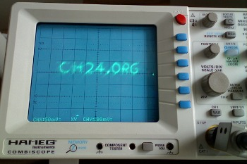

Q. Soundplot
You receive a set of encrypted audio messages from a secret admirer.
Listening to the sounds yields nothing but a headache, but you have a knack
that you would get something intelligible if you plotted each message
as a drawing.
Input
The messages are all stereo .wav files. Each channel carries an
incessant beeping sound that varies in pitch. You should draw a 2D
plot, using the frequency of the left channel as the X coordinate, and
the frequency of the right channel as the Y coordinate. (The frequencies
map linearly to euclidean space.)
| |

|
Output
For each input, you should send the message that you can (or can not) read
on the resulting plot. Capitalization and punctuation do matter, as does
the placement of whitespace (but the count and kind of whitespace doesn't).
Score
This task has exact scoring - you either get a submission right, or don't.
Correct submissions are worth 100 points - incorrect submissions are penalized
-5 points.